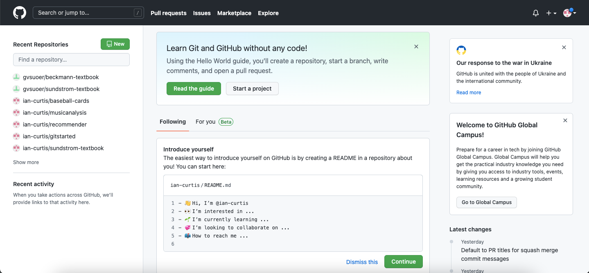
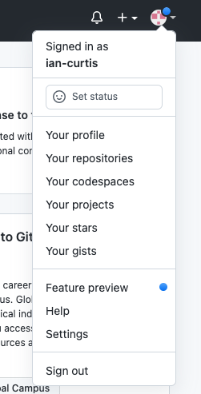

Section 3.1 Navigating GitHub
So what is GitHub? It is a website that allows us to share our files with the world and it widely used by the coding/programming community. With GitHub, any public code can be viewed by anyone. Each person is able to copy the code and mess with it on their own computer, all without the original being changed. But if someone wants to change the original, they can submit a request asking the owners to incorporate their changes. GitHub keeps track of all of this information and can also help with version control. If you make a big mistake, you can revert back to old versions and try again. GitHub works closely with Git (hence its name) and is a nice interface for many common Git functions.
Before attempting to tackle Git, I think it’s best to show you the ropes of GitHub. After we get set up here and get more comfortable with the jargon, we can move to Git. In this section we will create a GitHub account and get familiar with the layout of GitHub. Much of what is said in this section and chapter is directly applicable to Git (Chapter 4).
Subsection 3.1.1 Creating A GitHub Account
Creating a GitHub account is easy and free. Just be careful along the way; there are a few things to take into consideration. If you already have a GitHub account, skip to Subsection 3.1.2. If you don’t, keep reading.
First, navigate to GitHub 31 . Any browser should work. Click on the “Sign Up” in the top right corner. A welome box should pop up. Follow the instructions to create an account:
- Enter your email
- Create a password
- Choose a username. Attention! Choose your username carefully. Jennifer Bryan 32 has some great tips for choosing a username. A few are reproduced here:
- Incorporate your actual name! People like to know who they’re dealing with. Also makes your username easier for people to guess or remember.
- Reuse your username from other contexts, e.g., Twitter or Slack. But, of course, someone with no GitHub activity will probably be squatting on that.
- Pick a username you will be comfortable revealing to your future [or current] boss.
- Shorter is better than longer.
- Be as unique as possible in as few characters as possible. In some settings GitHub auto-completes or suggests usernames.
- Make it timeless. Don’t highlight your current university, employer, or place of residence, e.g. JennyFromTheBlock.
- Avoid the use of upper vs. lower case to separate words. We highly recommend all lowercase. GitHub treats usernames in a case insensitive way, but using all lowercase is kinder to people doing downstream regular expression work with usernames, in various languages. A better strategy for word separation is to use a hyphen - or underscore _. [Again the ideas from File Names With Spaces come back.]
- I would like to add one note to her list: avoid gaming usernames. GitHub is a serious professional community and something like “Xx_sp1cyMU3TARD_xX” would not be appropriate.
While it is possible to change your username later, it is better to not fall back on that as that can cause complications. As an example, my username is “ian-curtis”. I would have preferred to have it without any spaces but that was taken. It is short, simple, timeless, and I do not feel bad sharing it with anyone. If you have a very common name, consider using hyphens and underscores or rearranging your name. I could have tried “curtisi” or “curtian” (which sounds like I’m an alien).
Once you finish setting up the account (email verification may be required), navigate back to the home page (github.com 33 ) and carry on.
Subsection 3.1.2 The Profile Page
You should be on the home page of GitHub which might look something like my homepage in Figure 3.1.2.1. You may not see much if you just created an account. Probably lots of buttons telling you to get started or take a tutorial and whatnot. Feel free to click on those if you’d like, but I’d suggest following along here first and revisiting those later if you need more explanation.

Your profile page can be found by clicking on the robot-y icon (see Figure 3.1.2.2) in the top right and clicking on “Your profile”. (Notice that the URL uses your username.) You probably don’t see much. That’s ok, you haven’t created anything yet! On this page (the “Overview” tab) you can see your popular repositories, a graph of your contributions and a summary of your activity. Check out my profile page 34 for an example.

First, you can edit your basic profile information on the left hand side including your profile image, name, bio, and location. I would recommend filling as much of that out as possible; it allows companies and other people to find you and confirm that you are who you are.
Wait a minute, I just used an unfamiliar word: repository. Essentially, a repository is the Git/GitHub way to say “directory” or “folder”. A repository is usually one project; one repository contains all of the files and information for one project. For example, the files for this book can all be found under my repository titled gitstarted 35 . This book constitutes as one project and therefore all files for this book are there. Remember Jennifer Bryan from above? All of the files for her book, Happy Git With R can be found on her repository 36 . Soon, you too will have repositories! (Note: a repository is often shortened to just repo.)
There are a few other tabs at the top of the page. The “Repositories” tab simply lists all of your repos. (You can also find this page from the drop-down menu by your profile image in the top right.) The other three are not important for basic use (I haven’t even used them yet).
Subsection 3.1.3 Settings and Customizations
Click on the profile icon in the top right (Figure 3.1.2.2) and select “Settings”. Don’t be scared of the long list of possible customizations that are available. Most are only applicable to experienced GitHub users. I will introduce the settings you may be interested in right now. The headings of the following paragraphs match up with the headings of the tabs on the GitHub page. Note that some tabs have been excluded as well as some settings within some tabs. This does not mean that they are not important; it just means that I don’t think they are necessary for a beginner.
Profile.
Here, you can change your name, public email (if you have multiple AND if you have chosen to make your email public), a mini bio, relevant info about your other social media and company, location, and whether or not you are searching for a job. See Emails for more info.
Account.
Here is where you can change your username. I would strongly recommend against changing your username except in dire circumstances. This could lead to broken links or, if someone claims your old username, links to the wrong repository. This is why I hope you took the time to really think of a good username when created your account.
Ok fine. If you have just created your account, have no repositories, have done pretty much nothing on GitHub other than editng settings, AND are truly unhappy with your username, change it now. NOW. Then try not to do it again.
This tab will also let you delete your entire account. It is in red for a reason. I would highly recommend never deleting your account. Even if you are done with GitHub and don’t plan on ever using it again, others can still benefit from your code. Obviously some exceptions could apply here but for most purposes, you probably shouldn’t delete your account.
Appearance.
Here you can change how GitHub looks. Is white annoying? Switch to a dark theme. There are three of them. You can choose to have it change automatically with your computer (assuming your computer changes automatically). You can also edit the default emoji appearance.
There is currently a feature in testing allowing a theme designed for colorblind users. To enable this, click on your avatar in the top right and select “Feature preview”, then “Colorblind Themes”, then “Enable”. If you have feedback to give GitHub, you can also do that.
Account security.
Change your password here and you can enable two-factor authentication. You can also see where you are currently logged in. If an unfamiliar session is active, I would recommend changing your password and/or enabling two-factor authentication.
Billing & plans.
GitHub offers different paid plans 37 . Each of the plans has its own benefits (e.g., more storage, more collaborators) but the GitHub essentials work perfectly fine under the free plan and many people do not upgrade. Once you become more familiar with Git, GitHub, and start developing more projects, you might like an upgrade. However, there is no need to pay anything at this point.
Emails.
You can choose to have multiple emails on your GitHub account. This may be something you want to do as you can also select to have one of your emails be a backup email for security. You can also select if you would like to keep your emails private or not. I currently have two emails on my account: my main, non-school email and my school’s
.edu email (so I can use my student discounts on my account without creating a new account).Notifications.
Pretty simple here. You can choose which notifications you would like to receive. Maybe keep the defaults for now and you can edit them later when you get an idea of what exactly GitHub sends notifications for. I still have the defaults selected and I don’t get many emails at all.
Repositories.
If you just created your account, this is probably empty. That’s ok! It will be populated soon with a list of all your repositories and repositories you have access to. I do want to point out the first setting, “Repository default branch”. It may say “master” in the text box. If so, please change it to “main” (by typing and clicking “Update” which is the new Git/GitHub standard.
For more information on the transition from “master” to “main”, please visit TheServerSide 41 .
Blocked Users.
Hopefully you won’t ever have to, but if you need to block a user, you can do so here.
Hopefully you now have an idea of how GitHub is organized and are aware of the customizations you can make. However, we have barely scratched the surface of what GitHub can do. In the next section, you will create your own repository and learn some GitHub vocabulary.
github.comhappygitwithr.com/github-acct.html#username-advicegithub.comgithub.com/ian-curtisgithub.com/ian-curtis/gitstartedgithub.com/jennybc/happy-git-with-rgithub.com/pricingeducation.github.com/packeducation.github.com/teacherseducation.github.com/schoolstheserverside.com/feature/Why-GitHub-renamed-its-master-branch-to-main